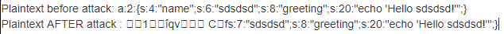
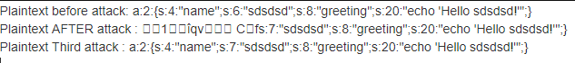
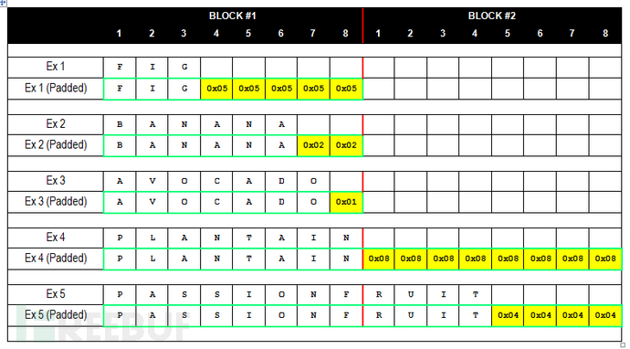
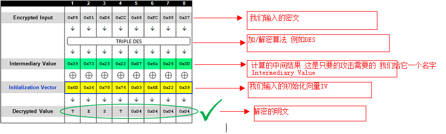

通过一道题了解PaddingOracleAttack&&CBC-Byte-Flipping-Attack
0x00 AES-CBC简述
加密:

Plaintext: 明文,以16字节为单位分组.最后一块不满16字节的需要用padding填充
以分组8个字节为例：需要填充n个字节，则n个字节都填充0x0n。如果恰好全满，填充8个0x08组成新块。OFB和CFB不需要填充
AES填充遵循 PKCS #7
IV: 初始化向量(16字节),初始向量不同,不同明文得到的密文也不相同
key: 密钥
Ciphertext: 密文.
加密过程:
Ciphertext-0 = Encrypt(Plaintext-0 XOR IV) (first block)
Ciphertext-N= Encrypt(Plaintext-N XOR Ciphertext-N-1)
解密

解密过程:
Plaintext-0 = Decrypt(Ciphertext-0) XOR IV
Plaintext-N= Decrypt(Ciphertext) XOR Ciphertext-N-1
0x01 CBC Byte Flipping Attack原理

原理: 解密过程是用 Ciphertext-N-1 来帮助解密 Ciphertext-N的,如果控制了 Ciphertext-N-1 那么也可以控制解出来的Plaintext-N,达到篡改消息的目的.
举例:
对明文 a:2:{s:4:"name";s:6:"sdsdsd";s:8:"greeting";s:20:"echo 'Hello sdsdsd!'";}
尝试把s:6改为 s:7
加密时的明文分组如下,要修改的地方位于block2的第三个字节,需要更改密文的block1的第三个字节,即enc[2]
1 | Block 1: a:2:{s:4:"name"; |
脚本如下:
1 |
|
运行结果如下,篡改了block的明文,条件是明文已知

虽然篡改了block2的明文,但是block1的明文也受到了影响,如果初始化向量可控,那么很显然也可以控制block1使其恢复正常.
iv篡改方式如下:
MIV = IV XOR Wrong-Ciphertext-0 XOR Ciphertext-0
解密过程:
Plaintext-0 = Decrypt(MIV XOR Wrong-Ciphertext-0)
= Decrypt(IV XOR Wrong-Ciphertext-0 XOR Ciphertext-0 XOR Wrong-Ciphertext-0)
= Decrypt(IV XOR Ciphertext-0)
= Plaintext-0
脚本:
1 | $iv="1234567891234567"; |
运行结果,这样就在不影响别的块的情况下,篡改了明文,条件是初始化向量IV可控,明文已知

0x02 Padding oracle attack
详细内容参考 https://www.freebuf.com/articles/database/151167.html
Padding Oracle Attack是针对CBC链接模式的攻击，和具体的加密算法无关
- padding - PKCS #5
既然CBC模式涉及到分组，那么就一定存在不能恰好被平均分组的情况，也就是说最后一组的长度可能不够长，这时候就需要对最后一组分组进行填充，使其和其他分组保持长度一致，这时候就需要了解一下填充所要遵循的规则了。对于采用DES算法进行加密的内容，填充规则遵循的是PKCS #5，而AES则是PKCS #7，实际上两者的要求基本一样，区别在于PKCS #5填充是八字节分组而PKCS #7是十六字节，换句话说就是填充的最大位数不一样，一个是0到8一个是0到16，下面我介绍一下PKCS #5的要求。为了保证每一组的长度一致，做法是在最后一个分组后填充一个固定的值，这个值的大小为填充的字节总数（十六进制表示）。例如最后还差4个字符，则填充四个0×04在最后，对于PKCS #5最多填充八位也就是八个0x08，所以填充字节的取值范围是0x01到0x08。需注意即便分组内容能正好平均分为n组，仍需要在最后一组后面填充一个八位分组，如下图

- Intermediary Value
前面提到的CBC模式解密
Plaintext-N= Decrypt(Ciphertext-N) XOR Ciphertext-N-1
Intermediary Value = Decrypt(Ciphertext-N)
如果 Intermediary Value 和Ciphertext-N-1 已知,则显然可以推出明文.
反过来,如果知道明文和IV,也可以猜解出Intermediary Value
明文当然不可能已知,但是可以知道的是padding在不符合标准的时候,程序会返回异常.
可以假设padding长度为1,填充的padding应为 0x01,通过枚举IV最后一个字节,可以枚举出程序不报错的情况.
不报错仅仅意味着padding正确
且这个值只有一个. 然后假设padding长度为2,3,4,字节依次枚举

详细枚举过程参考 https://blog.csdn.net/qq_19876131/article/details/52674589
得到了Intermediary Value ,和IV进行异或就可以得到明文, 也就获得了最后一块的明文信息.
舍弃掉最后一组密文，只提交第一组到倒数第二组密文，通过构造倒数第三组密文得到倒数第二组密文的明文，最后我们便可以得到全部的明文
攻击成立的两个重要假设前提 :
（1） 攻击者能够控制密文（Ciphertext），以及附带在密文前面的IV（初始化向量）
（2） 攻击者能够触发密文的解密过程，且能够知道密文的解密结果
通用exp, https://github.com/mpgn/Padding-oracle-attack/blob/master/exploit.py
0x03 NJCTF 2017 web300 Be Admin
未知明文情况下的attack
https://github.com/L0nm4r/njctf_2017_web_be_admin

通过备份可以拿到代码.https://github.com/L0nm4r/njctf_2017_web_be_admin/blob/master/src/index.php
exp: https://github.com/L0nm4r/njctf_2017_web_be_admin/blob/master/exp.py
太菜了,不会写.挖坑,待填.
0x04 other
ebctf-2013-web400-cryptoaescbchmac.无法控制IV,但是可以构造命令执行,前几个block不会影响后面命令的执行. https://codezen.fr/2013/08/05/ebctf-2013-web400-cryptoaescbchmac-write-up/
0x05 参考
AES加密 填充方式 https://blog.csdn.net/u010603798/article/details/98586594
https://resources.infosecinstitute.com/topic/cbc-byte-flipping-attack-101-approach/
https://codezen.fr/2013/08/05/ebctf-2013-web400-cryptoaescbchmac-write-up/
https://codezen.fr/2013/08/05/ebctf-2013-web400-cryptoaescbchmac-write-up/